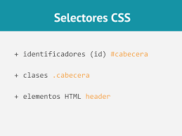
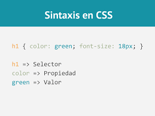

El presente sitio se realizo con base en el aprendizaje de la Sintaxis y Selectores CSS, es por eso que a traves de este sitio conoceras los Selectores, que son y como utilizarlos.
Selectores CSS
Un selector CSS es la primera parte de una regla CSS. Es un patrón de elementos y otros términos que indican al navegador qué elementos HTML se seleccionan para aplicarles una regla que incluye los valores de las propiedades CSS. Los selectores nos sirven para seleccionar los diferentes elementos en una página web y aplicar estilos. Hay una amplia variedad de selectores CSS, lo que permite una gran precisión a la hora de seleccionar elementos a los que aplicar estilo.
Los selectores definen sobre qué elementos se aplicará un conjunto de reglas CSS.

Selectores CSS - CSS | MDN. (2022, 6 marzo). https://developer.mozilla.org/es/docs/Web/CSS/CSS_Selectors
Su sintaxis se compone de sentencias en las que se establece un atributo de estilo y un valor para el mismo, ambas separadas por el signo de dos puntos.

Tenreiro, X. G. (2017, 10 noviembre). CSS – Sintaxis. WebFerrol. https://www.webferrol.com/css-sintaxis/#:%7E:text=Sintaxis%20CSS,caracter%C3%ADsticas%20propias%20de%20su%20aspecto